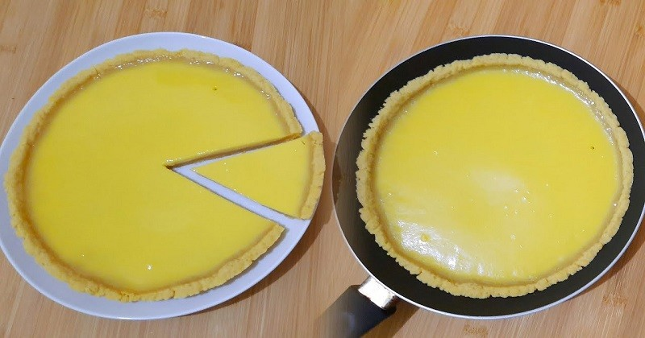

Pie Susu Teflon
Bahan :
| Tepung Terigu | 250 gram | |
| Telur | 1 Butir | |
| Mentega | 100 gram |
Bahan fla:
| Tepung Maizena | 1 sdm | |
| Air matang | 100 ml | |
| Kuning telur | 3 butir | |
| Vanili | 1/2 sdt | |
| Susu Kental Manis | 100 ml |
Cara memasak :
- Campurkan terigu dan mentega sampai rata. Tambahkan telur dan uleni sampai kalis.
- Untuk membuat fla, campur tepung maizena dengan air matang dan sisihkan. Kocok lepas kuning telur, vanili, dan susu kental manis.
- Bagi adonan ke teflon, usahakan agar rata dan tidak terlalu tebal. Tusuk adonan dengan garpu agar matang.
- Masak adonan dengan api kecil selama 15 menit, kemudian masukan adonan fla. Cek berkala dan masak hingga 30 menit hingga 1 jam.
- Tunggu hingga hangat, lalu angkat adonannya. Pie siap dihidangkan.